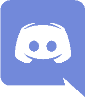

SmashNL op social media
- 
-
Discord (Ultimate)
Het Discord-kanaal van de Nederlandse Ultimate-community -
Discord (Melee)
Het Discord-kanaal van de Nederlandse Melee-community -

-
Facebook-pagina
De Facebook-pagina van SmashNL. -
-
Facebook-groep
De Facebook-groep van SmashNL. -

-
Twitter
Het Twitter-kanaal van SmashNL -

-
YouTube
Het YouTube-kanaal van SmashNL, met video's van Nederlandse toernooien. Voor geïnteresseerden in de Nederlandse Smash-geschiedenis bevat dit kanaal ook veel video's van oude sets (2010-2012).
Internationale communities
-
SmashBoards
Internationale Super Smash Bros. community website, vooral gericht op Amerika. -
/r/smashbros
Super Smash Bros. discussies op Reddit.